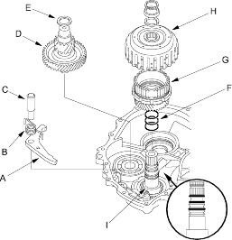
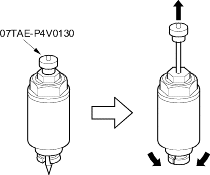
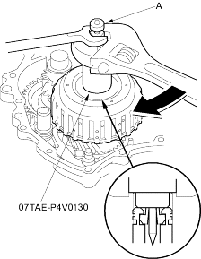

Start clutch installer, 07TAE-P4V0130
- Install the park pawl (A), pawl spring (B) and pawl shaft (C) in the transmission housing, theNmove the control lever to any position other than


- Install the secondary gear shaft (D) with selected 25 x 35 thrust shim (E) (see page 14-374).
- Wrap the driven pulley shaft splines with tape to prevent O-ring damage, install the new O-rings (F) in the shaft O-ring grooves and remove the tape.
- Install the secondary drive gear assembly (G) in the start clutch (H), then install them on the driven pulley shaft (I).
- Pull the handle of the special tool up, then install the tip of it into the driven pulley shaft feed pipe hole and set the special tool on the start clutch.
Do not allow dirt or other foreign particles to enter into the transmission.

- Push the handle (A) of the special tool, then tighten the nut to seat the secondary drive gear assembly on the drive pulley shaft.

- Pull the handle of the special tool up and remove the special tool.